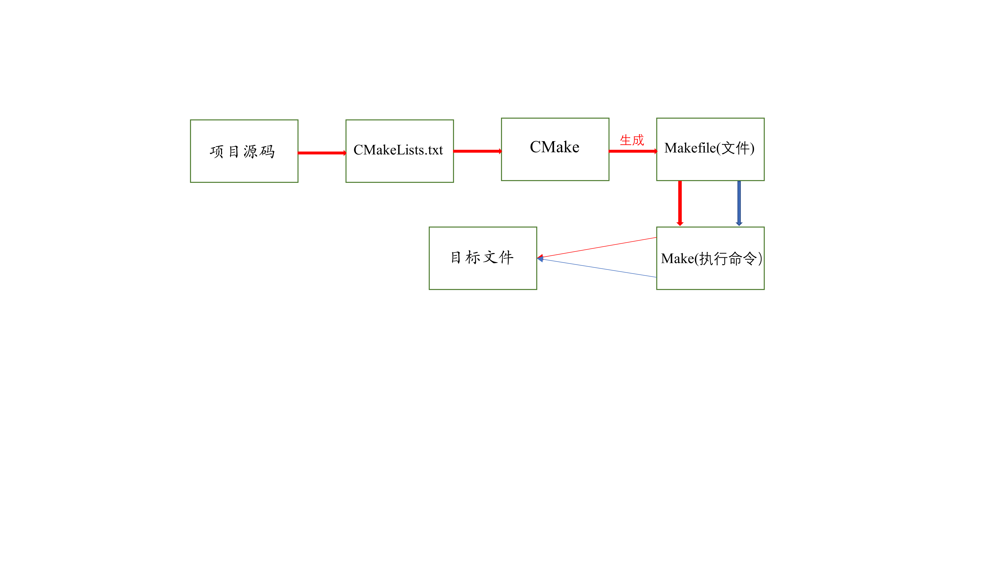

CMake
这里画一个图直接直接展示一下CMake和Makefile的使用过程

1 | g++ *.cpp -o app //直接编译 |
使用#注释
块注释#[[ ]]
camke_minimum_required：指定使用的cmake的最低版本
project：定义工程名称
add_executable：定义工程会生成一个可执行程序 add_executable(可执行程序名称 源文件名称（空格或者分号隔离源文件)）
cmake CMakeLists.txt：文件所在路径
1 | cmake_minimum_required(VERSION 3.15) |
生成了很多其他文件，我们可以把这些临时文件放在一个文件夹里，一般为build文件夹。创建build文件后，cd进build文件，执行camke ..，则cmake执行后生成的文件都放在了build文件夹里。
set的使用
set是为了简化add_executable(app, add.cpp div.cpp mult.cpp main.cpp sub.cpp)的编写，要不然这样和直接编译感觉没啥区别。set给一个变量赋值都是字符串类型，这些文件的名字会作为一个字符串存在变量里。
1 | # set指令的语法是： |
取变量值必须以这种方式。
1 | # "$ + {变量名}" |
还可以通过set设置使用C++的标准（C++11，C++17）。
1 | 正常编译选定c++标准 |
1 | # 使用camke指定c++标准，对应有一个宏叫做DCMAKE_Cxx_STANDARD |
set还可以指定输出路径，建议使用绝对路径，如果这个路径中的子目录不存在，会自动生成，无需自己手动创建。
1 | # 在CMake中指定可执行程序输出的路径，也对应一个宏，叫做EXECUTABLE_OUTPUT_PATH，它的值还是通过set命令设置 |
搜索路径
我们可以看到我们上面所讲的使用set并没有解决要将所有源文件名字写出来的本质问题。为了解决这个问题，这里我们讲一下通过搜索某个目录下的文件来引入源文件的方法。CMake给我们提供了两种方法来搜索文件，aux_source_directory命令或者file命令。
方式一
在CMake中使用aux_source_directory命令可以查找某个路径下的所有源文件。
1 | # 命令格式 |
方式二
通过file命令来搜索出所有需要的源文件
1 | # 命令格式 |
搜索头文件路径
在编译项目源文件的时候，很多时候都需要将源文件对应的头文件路径指定出来，这样才能保证在编译过程中编译器能找到这些头文件。在CMake里搜索头文件的命令也很简单
1 | include_directories(headpath) |
通过CMake制作库文件
有些时候我们编写的源代码并不需要将他们编译生成可执行程序，而是生成一些静态库或动态库提供给第三方使用，下面来讲解在cmake中生成这两类库文件的方法。
制作静态库
1 | # 在cmake中，如果要制作静态库，需要使用的命令如下： |
制作动态库
1 | cmake_minimum_required(VERSION 3.0) |
指定输出路径
对于生成的库文件来说和可执行程序一样都可以指定输出路径。这里使用LIBRARY_OUTPUT_PATH宏，这个宏对应静态库文件和动态库文件都适用。
1 | cmake_minimum_required(VERSION 3.0) |
包含库文件
在编写程序的过程中，可能会用到一些系统提供的动态库或者自己制作出的动态库或者静态库文件，cmake中也为我们提供了相关的加载动态库的命令。
链接静态库
1 | src |
现在我们把上面src目录中的add.cpp、div.cpp、mult.cpp、sub.cpp编译成一个静态库文件libcalc.a。
1 | 测试目录结构 |
在cmake中，链接静态库的命令如下：
1 | link_libraries(<static lib> [<static lib>...]) |
如果该静态库不是系统提供的（自己制作或者使用第三方提供的静态库）可能出现静态库找不到的情况，此时可以将静态库的路径也指定出来：
1 | link_directories(<lib path>) |
这样，修改之后的CMakeLists.txt文件内容如下:
1 | cmake_minimum_required(VERSION 3.0) |
链接动态库
target不知道这个符号是来自它链接的多个库中的哪一个库，它只知道有这么一个库。
FATAL_ERROR：CMake 错误, 终止所有处理过程（CMake在生成”message to display”这条消息之后就不在执行了，直接中断）
CMake在底层管理的时候会将子字符串通过分号隔开，但通过message打印变量值的时候，看不到这个分号。这个分号有助于cmake进行字符串删除操作。只能删除组成变量的子串。比如一开始SRC=”A123”，后来apeend了“456”, “789”，如果没有分号，你可能可以删除”345”，但有了分号后，就删除不了了，你只能删除组成SRC的完整的子串，比如”A123”, “456”等。
注意，存储列表长度的output variable依旧是一个字符串类型。